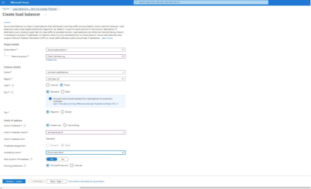
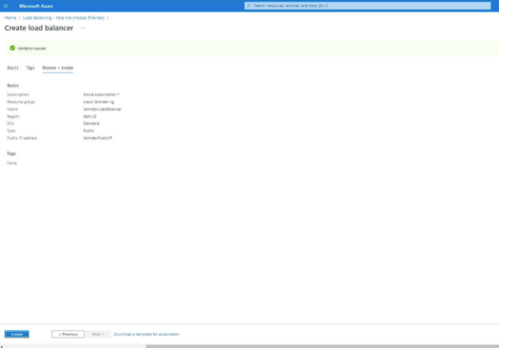
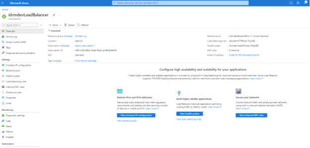
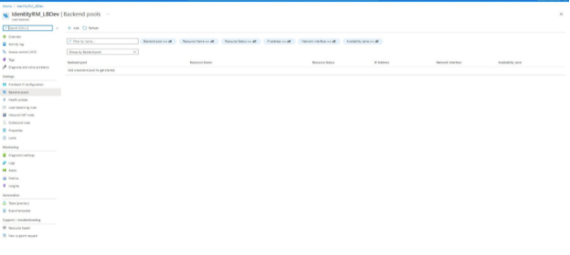
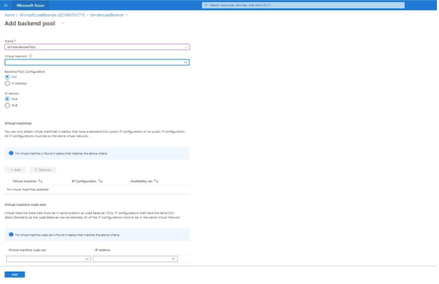
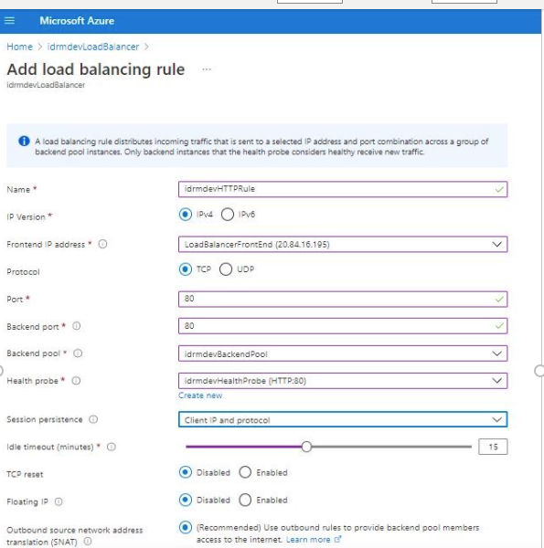

1. Introduction
IdentityRM is a platform that facilitates digital business transformation. IdentityRM provides an evolved thought process where identities belong to relationships, and relationships become the fundamental managed entity.
Relationships allow you to provide business context and macro layer for managing identity within digital business models.
This guide describes how to install IdentityRM in Microsoft Azure.
Version tested: IdentityRM_1.1-4161
2. System Requirements
Recommended configurations and sizing:
-
2 Ubuntu 20.0.02 D2 as v4 instances with 30 GB of storage.
-
Azure Database for PostgreSQL General Purpose 2 vCore 10 GiB.
-
Load Balancer for HTTPS between the two Azure VM instances. Set for sticky sessions.
-
2 Ubuntu 20.0.02 D2 as v4 instances with 30 GB of storage
-
Azure Database for PostgreSQL Memory Optimized 2 vCore 10 GiB
-
Load Balancer for HTTPS between the two Azure VMs. Set for sticky sessions.
3. Preparation for Installation
Before installing IdentityRM, you need to complete the prerequisites to set up the following:
-
Azure Load Balancer
-
Azure VMs
-
PostgreSQL database
3.1. Setting up Azure Load Balancer
Before installation, you need to have a public Azure Load Balancer ready to load balance your virtual machine.
For more information about the configurations, see the Microsoft documentation.
3.1.1. Prerequisites
-
Microsoft Azure Portal account
-
Microsoft Azure Portal subscription that includes the Azure Load Balancer feature.
3.1.2. Set up Azure Load Balancer
The load balancer is attached to the VMs. For information about creating the VM, refer to [Configuring Azure VMs].
To configure,
-
Log into Azure portal.
-
In the Search box, type Load Balancer service and select load balancer from the displayed results.
-
On the Load Balancer page, click New.
-
On the Create Load Balancer page, enter the details about load balancer.
 -
Review the summary and click Create to deploy load balancer.
A confirmation screen displays successful deployment.
-
Click Go to resource to show the configuration of load balancer.
Make note of the Public IP address to use later when configuring DNS.  -
Click the Backend Pools tab and select New to create a backend server pool.
 -
Enter details about the backend server pool.
 -
Click the Load Balancing Rules tab and select Add to create a load balancer rule.

The load balancer is ready to use. The backend pools are connected to the Azure VMs.
3.2. Setting up Azure VMs
You can deploy the IdentityRM solution on two or more of Azure VM instances. For more information, see Microsoft Documentation.
3.2.1. Prerequisites
-
Microsoft Azure Portal account.
-
Microsoft Azure Portal subscription that includes the Azure Load Balancer feature.
-
A configured Azure Load Balancer.
| You can configure the Load Balancer even after creating the VM, but it works faster when configured before. |
3.2.2. Set up Azure VM
-
Log into Azure portal.
-
Search the Virtual Machine service.
-
Click Add > Start with a pre-set configuration.
-
Select General purpose D-Series default as the Workload type and then click Continue to Create a VM.
-
On the Create A Virtual Machine page, perform the following steps:
-
On the Basics tab, enter required details for all the fields.
-
On the Disks tab, enter details and select a disk size to create a data disk.
-
On the Networking tab, configure the network and load balancer.
-
On the Review and Create tab, review the entered details and click Create.
Click Previous if you need to modify the details. The Generate new key pair dialog box is displayed.
-
-
Click Download private key and create resource to save the key for future reference.
The message, Your deployment is complete confirms successful deployment of a new virtual machine.Now, you need to configure the virtual machine.
-
On the deployment confirmation page, click Go to Resource.
The Overview tab displays the complete configuration of the virtual machine. -
Copy the IP address.
You need the IP address to connect the VM. -
Click the Networking tab and configure the SSH port firewall rule.
The VM instance is ready to use. You can create more VMs following the same steps.
3.2.3. Connect to the Azure VM Instance
Use the SSH key and an SSH connection tool (For example, PuTTy) or command line SSH to connect to the VM instance. This section describes how to connect the VM using PuTTy. For detailed information, see Convert your Private key using PuTTYgen.
Prerequisites
-
Your .pem file.
-
Conversion of the private key using PuTTYgen.
-
The IP Address copied while creating the VM.
Before you connect
You need to convert the private key using PuTTYgen.
To convert,
-
Start PuTTYgen (Click Start>All Programs>PuTTYgen).
-
Select RSA for Types of key to generate.
-
Click Load and select the All Files option for Files to select.
-
Select your .pem file for the key pair that you generated and click Open to import.
For example, IdentityRMDev1.pem. -
Click Save private key.
A warning appears. -
Select Yes to save the key without a passphrase.
-
Enter a name for the key and click Save.
| The name of key must match with the name of the key pair. |
You have converted the private key to the .ppk file extension that PuTTYgen supports. Now, use the SSH client of PuTTY to connect your VM instance.
Connect your Virtual Machine
To connect your VM,
-
Start PuTTYgen (Click Start>All Programs>PuTTYgen).
The PuTTY Configuration wizard appears. -
On the Session screen, enter the IP address of the VM instance and click Save.
-
On the Auth screen, Browse and add the PPK file received after converting the private key.
-
On the Data screen, enter the Azure user login name.
-
Click Open.
-
Access the new host configuration to login.
The VM session starts.
3.3. Setting up PostgreSQL Database
IdentityRM installs a local PostgresSQL database as part of the installation process. You can modify the configuration to use the Azure PostgresSQL remote database. This section describes how to set up the PostgresSQL database and connect IdentityRM to the available database.
Prerequisite: Azure subscription.
3.3.1. Set up the Azure PostgresSQL Server
You can access the VM instance using the SSH key generated while creating the VM instance, and an SSH connection tool (For example, PuTTY) or command line SSH.
To set up, create an Azure database for PostgresSQL Server and then configure. For detailed information, refer to Microsoft documentation.
To configure,
-
Go to Azure portal.
-
Search for and select the PostgresSQL service configuration.
-
Click New+ to add a new PostgresSQL server.
-
On the Select Azure Database for PostgreSQL deployment option page, select Create for Single Server.
-
On the Basics tab of Single Server, enter the details and click Review + create.
-
Review the configuration and click Create.
The following confirmation message appears: Your deployment is complete. -
Click Go to Resource.
View the server details and start configuring.You need to configure to make the server publicly accessible.
-
Click the Connection Security tab.
This setting helps to configure firewall rules to access the PostgresSQL server. -
To configure firewall, perform the following steps:
-
Enter the IP address of the VM instance.
IP address is available in the VM instance configuration overview. -
Enter Client IP.
The Client IP is a local client address for using clients installed on the Desktop, for instance.
-
-
Click the Connection Strings tab to show the configuration parameters to be used in IdentityRM.
The PostgresSQL configuration is complete.
3.3.2. Configure IdentityRM to use the Azure PostgresSQL Server
Configure IdentityRM after installation to connect to the Azure PostgresSQL server.
To configure,
-
Connect to the VM server using an SSH shell.
-
Edit the following idaas_manager/.env file and enter related input in the highlighted fields:
-
SQL_ENGINE=django.db.backends.postgresql
-
SQL_DATABASE=postgres
-
SQL_USER=postgres@idrmdevpostgres
-
SQL_PASSWORD=<your_password>
-
SQL_HOST= idrmdevpostgres.postgres.database.azure.com
-
SQL_PORT=5432
-
-
Restart the server.
4. Installing IdentityRM
To install IdentityRM, you need to first install Docker.
4.1. Install Docker
To install,
-
Use the Ubuntu 20.0.02 Azure VM image.
-
Log into AzureVM using PuTTY.
-
Install docker and set up as non-root user using the following steps:
-
Run
sudo snap install docker(installs docker and docker-compose). -
Run
sudo groupadd docker. -
Run
sudo usermod -aG docker $USER. -
Run
sudo chmod 777 /var/run/docker.sock. -
Log out and return into Unix shell.
-
Run the following to validate that docker is running properly:
azureuser@IdentityRM:~/idaas_manager$ docker run hello-world
The following message confirms successful completion:Hello from Docker! This message shows that your installation appears to be working correctly. To generate this message, Docker took the following steps: 1. The Docker client contacted the Docker daemon. 2. The Docker daemon pulled the "hello-world" image from the Docker Hub. (amd64) 3. The Docker daemon created a new container from that image which runs the executable that produces the output you are currently reading. 4. The Docker daemon streamed that output to the Docker client, which sent it to your terminal. To try something more ambitious, you can run an Ubuntu container with: $ docker run -it ubuntu bash Share images, automate workflows, and more with a free Docker ID: https://hub.docker.com/ For more examples and ideas, visit: https://docs.docker.com/get-started/
-
-
Run
sudo apt install unzip.
4.2. Install IdentityRM
To install,
-
Unzip the release file.
unzip IdentityRM*.zip. -
Run the installation command.
cd idaas_manager make install
Output azureuser@IdentityRM:~$ cd idaas_manager/ azureuser@IdentityRM:~/idaas_manager$ make install Installing docker images... 77cae8ab23bf: Loading layer 5.815MB/5.815MB 766d031fa954: Loading layer 2.56kB/2.56kB db3a903780ba: Loading layer 1.536kB/1.536kB 01418db173bb: Loading layer 70.98MB/70.98MB 760ddfacf422: Loading layer 30.21kB/30.21kB e4f3e630426a: Loading layer 2.048kB/2.048kB 1b5ae6d491ae: Loading layer 3.072kB/3.072kB dde7cc167531: Loading layer 8.704kB/8.704kB Loaded image: identity_rm_db_prod:latest f1b5933fe4b5: Loading layer 5.796MB/5.796MB fbe0fc9bcf95: Loading layer 17.86MB/17.86MB 6e3177938916: Loading layer 32.35MB/32.35MB 2c01af858ac4: Loading layer 3.072kB/3.072kB a54f56ad01ba: Loading layer 12.8kB/12.8kB 112ba21ea5bb: Loading layer 3.072kB/3.072kB 73de2bbf029e: Loading layer 1.319MB/1.319MB 4128c9e3485c: Loading layer 11.66MB/11.66MB c4313026eb26: Loading layer 1.602MB/1.602MB 99f2b2e2dff5: Loading layer 903.7kB/903.7kB Loaded image: nginx_prod:latest b2d5eeeaba3a: Loading layer 5.88MB/5.88MB d2c4a6adc529: Loading layer 12.29kB/12.29kB 33292fe7ceb9: Loading layer 2.139MB/2.139MB 845cc97e6c8b: Loading layer 25.47MB/25.47MB c432e6f541e7: Loading layer 2.048kB/2.048kB f3286249f0c5: Loading layer 3.584kB/3.584kB Loaded image: redis:alpine 8803ef42039d: Loading layer 119.2MB/119.2MB c2c789d2d3c5: Loading layer 17.1MB/17.1MB 527ade4639e0: Loading layer 17.85MB/17.85MB 2e5b4ca91984: Loading layer 150MB/150MB da9418a2e1b1: Loading layer 520.4MB/520.4MB 98d95bdfa037: Loading layer 18.49MB/18.49MB 0d77d4546954: Loading layer 106.6MB/106.6MB 7a8a38bf5538: Loading layer 4.608kB/4.608kB ccbefb30278f: Loading layer 6.996MB/6.996MB 58b416e5ba92: Loading layer 10.97MB/10.97MB 5806931a6d90: Loading layer 387.9MB/387.9MB e310f70f1efa: Loading layer 3.072kB/3.072kB 57f75c964d98: Loading layer 745.9MB/745.9MB a8bb298967a2: Loading layer 2.56kB/2.56kB bf8b9eb818d8: Loading layer 525.3kB/525.3kB 1a6aeb12327d: Loading layer 2.56kB/2.56kB cdbfa6641b6a: Loading layer 50.69kB/50.69kB a9c491a4d7b8: Loading layer 3.072kB/3.072kB 8cafbe6ac6f0: Loading layer 3.584kB/3.584kB 5a2aeb108b3c: Loading layer 487.8MB/487.8MB 650fb0b48dba: Loading layer 2.048kB/2.048kB a185a502371d: Loading layer 2.56kB/2.56kB eac5e8977635: Loading layer 1.371MB/1.371MB e5be8ead428f: Loading layer 5.35MB/5.35MB 27375b1cf211: Loading layer 35.07MB/35.07MB 43d93b418363: Loading layer 31.24MB/31.24MB cd7ec32ab4f1: Loading layer 66.28MB/66.28MB Loaded image: identity_rm_web_prod:latest Images successfully installed Installation successfull!You can now run the application. For more information, refer to
README.mdfrom the related Git repository. -
Set up application
To set up,
-
Perform the following steps:
-
Run
make up. -
Run
make collectstatic. -
Select yes to answer the prompt.
-
Run
make import_config
import_file=sample_configurations/delegated_admin_tenant_current.json.Output azureuser@IdentityRM:~/idaas_manager$ make import_config import_file=sample_configurations/delegated_admin_tenant_current.json identity_rm_db_prod is up-to-date redis_prod is up-to-date identity_rm_web_prod is up-to-date nginx_prod is up-to-date Migrations for 'core': core/migrations/0003_auto_20210527_1524.py - Alter field theme on dashboardservice Operations to perform: Apply all migrations: admin, admin_interface, administration, api, auth, authtoken, contenttypes, core, dashboard, entitlements, frontend, guardian, helpdesk, logs, organization, report_builder, reports, sessions, silk, teams, thycotic, viewflow, workflow Running migrations: Applying contenttypes.0001_initial... OK Applying contenttypes.0002_remove_content_type_name... OK Applying core.0001_initial... OK Applying admin.0001_initial... OK Applying admin.0002_logentry_remove_auto_add... OK Applying admin.0003_logentry_add_action_flag_choices... OK Applying admin_interface.0001_initial... OK Applying admin_interface.0002_add_related_modal... OK Applying admin_interface.0003_add_logo_color... OK Applying admin_interface.0004_rename_title_color... OK Applying admin_interface.0005_add_recent_actions_visible... OK Applying admin_interface.0006_bytes_to_str... OK Applying admin_interface.0007_add_favicon... OK Applying admin_interface.0008_change_related_modal_background_opacity_type... OK Applying admin_interface.0009_add_enviroment... OK Applying admin_interface.0010_add_localization... OK Applying admin_interface.0011_add_environment_options... OK Applying admin_interface.0012_update_verbose_names... OK Applying admin_interface.0013_add_related_modal_close_button... OK Applying admin_interface.0014_name_unique... OK Applying admin_interface.0015_add_language_chooser_active... OK Applying admin_interface.0016_add_language_chooser_display... OK Applying admin_interface.0017_change_list_filter_dropdown... OK Applying admin_interface.0018_theme_list_filter_sticky... OK Applying viewflow.0001_initial... OK Applying viewflow.0002_fsmchange... OK Applying viewflow.0003_task_owner_permission_change... OK Applying viewflow.0004_extend_fields_length... OK Applying viewflow.0005_rename_flowcls... OK Applying viewflow.0004_subprocess... OK Applying viewflow.0005_merge... OK Applying viewflow.0006_merge... OK Applying viewflow.0007_owner_permission_obj... OK Applying viewflow.0006_i18n... OK Applying viewflow.0008_merge... OK Applying viewflow.0007_task_assigned... OK Applying viewflow.0008_jsonfield_and_artifact... OK Applying viewflow.0009_merge... OK Applying workflow.0001_initial... OK Applying administration.0001_initial... OK Applying authtoken.0001_initial... OK Applying authtoken.0002_auto_20160226_1747... OK Applying authtoken.0003_tokenproxy... OK Applying api.0001_initial... OK Applying api.0002_auto_20210524_1205... OK Applying auth.0001_initial... OK Applying auth.0002_alter_permission_name_max_length... OK Applying auth.0003_alter_user_email_max_length... OK Applying auth.0004_alter_user_username_opts... OK Applying auth.0005_alter_user_last_login_null... OK Applying auth.0006_require_contenttypes_0002... OK Applying auth.0007_alter_validators_add_error_messages... OK Applying auth.0008_alter_user_username_max_length... OK Applying auth.0009_alter_user_last_name_max_length... OK Applying auth.0010_alter_group_name_max_length... OK Applying auth.0011_update_proxy_permissions... OK Applying auth.0012_alter_user_first_name_max_length... OK Applying organization.0001_initial... OK Applying helpdesk.0001_initial... OK Applying entitlements.0001_initial... OK Applying core.0002_auto_20210524_1205... OK Applying core.0003_auto_20210527_1524... OK Applying dashboard.0001_initial... OK Applying frontend.0001_initial... OK Applying frontend.0002_i18n... OK Applying guardian.0001_initial... OK Applying guardian.0002_generic_permissions_index... OK Applying logs.0001_initial... OK Applying report_builder.0001_initial... OK Applying report_builder.0002_auto_20150201_1809... OK Applying report_builder.0003_auto_20150720_1549... OK Applying report_builder.0004_auto_20170915_2046... OK Applying report_builder.0005_add_delta_filtering... OK Applying report_builder.0006_auto_20180413_0747... OK Applying report_builder.0007_auto_20190214_1405... OK Applying reports.0001_initial... OK Applying sessions.0001_initial... OK Applying silk.0001_initial... OK Applying silk.0002_auto_update_uuid4_id_field... OK Applying silk.0003_request_prof_file... OK Applying silk.0004_request_prof_file_storage... OK Applying sil .0005_increase_request_prof_file_length... OK Applying silk.0006_fix_request_prof_file_blank... OK Applying silk.0007_sqlquery_identifier... OK Applying teams.0001_initial... OK Applying thycotic.0001_initial... OK Applying thycotic.0002_auto_20210524_1205... OK Superuser created successfully. Importing config file sample_configurations/delegated_admin_tenant_current.json ... file imported. Tenant created
-
The setup is complete.
5. Configuring Access to IdentityRM
To configure access to IdentityRM, you need to set up the local environment.
5.1. Set up local environment
To set up your local environment, add the IP address of your VM.
To set up,
-
On your local environment, go to the following folder and open the hosts file:
-
Windows: C:\Windows\System32\drivers\etc
-
Linux: /etc/hosts
-
-
Add the following entries to the hosts file:
52.224.164.159 workflowportal.icsynergy.info #local 52.224.164.159 idrm.icsynergy.info #local
-
Replace the IP address with the address of the VM for your local environment (For example, 127.0.0.1).
5.2. Access IdentityRM
You need to configure IdentityRM with the development environment.
To set up access,
-
Open IdentityRM Relationship.
-
Log in using an administrator account for the system.
5.3. Key Configuration and Log file locations
Configure the following files to monitor the application:
-
logs/debug.log: Shows trace logs for the application and displays any errors. -
.env: Displays information about the environment. -
nginx.conf: Helps to modify all as the base domain for the application.
The files are all relative to the base idaas_manager directory.
Other settings are available in the IdentityRM database. You can configure using the IdentityRM Configuration tools available at: